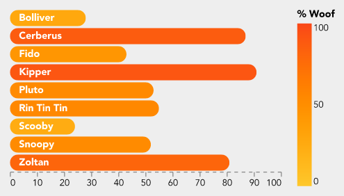

Charts and Graphs in Docma
Docma supports the Vega-Lite declarative syntax for specifying charts / graphs. Vega-Lite specifies a mapping between source data and visual representations of the data.
To make all this work in docma requires three things:
-
A means to tell docma that a chart needs to be generated. This is done using a special URL format within
<IMG>tags in the source HTML. See Invoking Charts in HTML Source Documents. -
A means to specify the design of the chart. This is done with a chart specification file within the document template.
-
A means to feed data to the chart creation process. See Source Data for Charts.
Invoking Charts in HTML Source Documents
Docma provides a URL based mechanism to trigger creation of charts during the process of converting HTML to a PDF or HTML output document. See Dynamic Content Generation for more details.
It looks like this:
<IMG src="docma:vega?spec=charts/my-chart.yaml&data=...">
In a nutshell, when docma sees a URL in this form, it knows to
get data from the source specified by the data parameter and feed it into the
chart generator with the Vega-Lite specification indicated by the spec
parameter:
Normal CSS styling can also be applied:
<IMG style="width: 5cm;"
src="docma:vega?spec=charts/my-chart.yaml&data=...">
Here is a more complete example, showing how Jinja can help build the src URL
structure safely:
<IMG style="width: 10cm;" src=docma:vega?{{
(
( 'spec', 'charts/my-chart.yaml' ),
( 'data', 'file;data/my-data.csv' ),
( 'params', { 'extra_rendering_param': 1234 } | tojson)
) | urlencode
}}">
See also docma scheme parameters for vega charts.
Chart Specification Files
The chart specification is a file in the document template containing a Vega-Lite chart definition.
The chart specification will be Jinja rendered prior to use.
The chart specification can be in either JSON or YAML format. Docma doesn't care which. There are pros and cons with each format. YAML is easier to write and to read but JSON is the native format of the examples in the Vega-Lite sample gallery or the Vega-Lite on-line editor. You're going to want to use both of these resources.
The chart specification file should still have a .yaml suffix, even if the
contents are JSON. This all works because valid JSON is also valid YAML.
Note that docma uses the Vega-Altair Python package to process Vega-Lite specifications.
Source Data for Charts
The value of the data parameter in a docma:vega?... URL is a docma data
source specification that indicates where to obtain
the data and where to attach it to the chart specification.
The data parameter can be used multiple times if there are multiple data
sources in the chart.
If the data parameter is not specified, the source data is assumed to be
contained within the chart specification itself. This can actually be useful
when designing a chart to avoid the need to wrangle external data when
experimenting.
See Data Sources in Docma for more information.
Tips and Suggestions for Designing Charts
The Vega-Lite website has lots of resources to help with designing charts. This section just provides a few tips and suggestions.
Some suggestions for simplifying the development:
-
Where possible, start with a chart from the Vega-Lite sample gallery and play with it in the on-line editor to get close to what you are after.
-
Include a small sample data set in the chart specification to allow experimentation. The sample data can be left in the specification when included into a docma document template. Docma will replace it at run-time.
-
Charts reference a JSON schema:
$schema: https://vega.github.io/schema/vega-lite/v5.json. PyCharm will interpret this and provide some auto completion and validation as you go. -
Believe it, or not, but ChatGPT is surprisingly helpful with Vega-Lite. It can often give meaningful answers to enquiries like these:
-
Explain this Vega-Lite specification to me ... (paste the JSON in)
-
I have this Vega-Lite specification. How do I remove the axes and change the colour on the bars?
-
Design a Vega-Lite chart that shows a heat map of ... with ... on the x axis and ... on the y axis
-
-
ChatGPT can get confused with obscure concepts (like interval meter data). You can often replace this with more generic data in the questions (temperature data is a good substitute for interval data).
-
Layers are quite an important concept in Vega-Lite. Make an effort to understand them.
Samples
With a bit of effort, Vega-Lite does a surprisingly good job of generating good looking charts with a small amount of specification.
Here are a few examples.
Bar Chart
This is a bar chart of dog woof-power.

This is the specification file (with truncated data).
$schema: 'https://vega.github.io/schema/vega-lite/v5.json'
width: 300
config:
font: Avenir
background: '#eeeeee'
padding: 10
view:
stroke: transparent
axisX:
grid: false
gridWidth: 0.5
domainDash:
- 4
- 4
formatType: number
axisY:
grid: false
data:
values:
- Dog: Bolliver
Woof: 28
view:
fill: '#eeeeee'
encoding:
'y':
field: Dog
title: Dog
type: ordinal
axis: null
layer:
- mark:
type: bar
cornerRadius: 20
encoding:
x:
field: Woof
title: null
type: quantitative
color:
field: Woof
type: quantitative
title: '% Woof'
scale:
domain: [ 0, 100 ]
range: [ '#fec72b', '#fa4617' ]
- mark:
type: text
align: left
x: 10
color: white
fontWeight: bold
encoding:
text:
field: Dog
Interval Meter Data Heat Map
This is a heat map of interval meter data by day and month.

This is the specification file (with truncated data).
$schema: 'https://vega.github.io/schema/vega-lite/v5.json'
title: 'Daily Usage'
config:
font: Avenir
view:
continuousWidth: 300
continuousHeight: 300
step: 13
strokeWidth: 0
axis:
domain: false
data:
name: usage_by_day
mark:
type: rect
encoding:
color:
aggregate: max
field: kwh
legend:
title: kWh
type: quantitative
scale:
range: [ '#fec72b', '#fa4617' ]
x:
axis:
format: '%e'
labelAngle: 0
field: date
timeUnit: date
title: Day
type: ordinal
y:
field: date
timeUnit: month
title: Month
type: ordinal
datasets:
# Sample data -- this gets replaced
usage_by_day:
- date: 2023-07-01
kwh: 1234